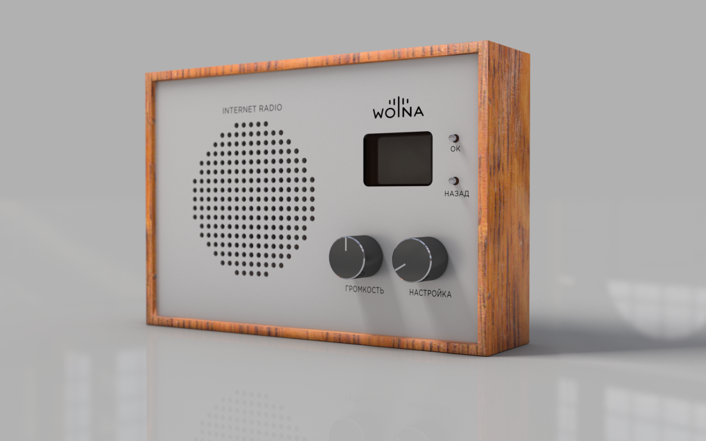
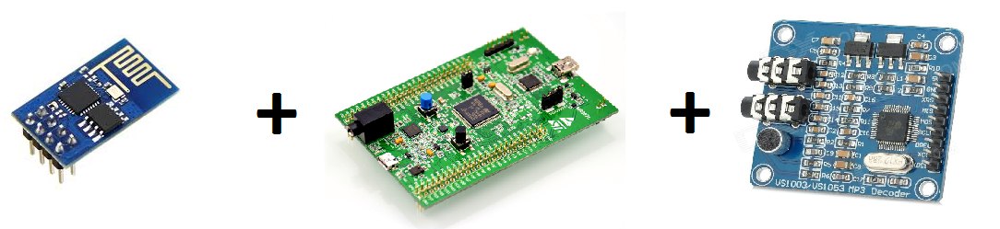
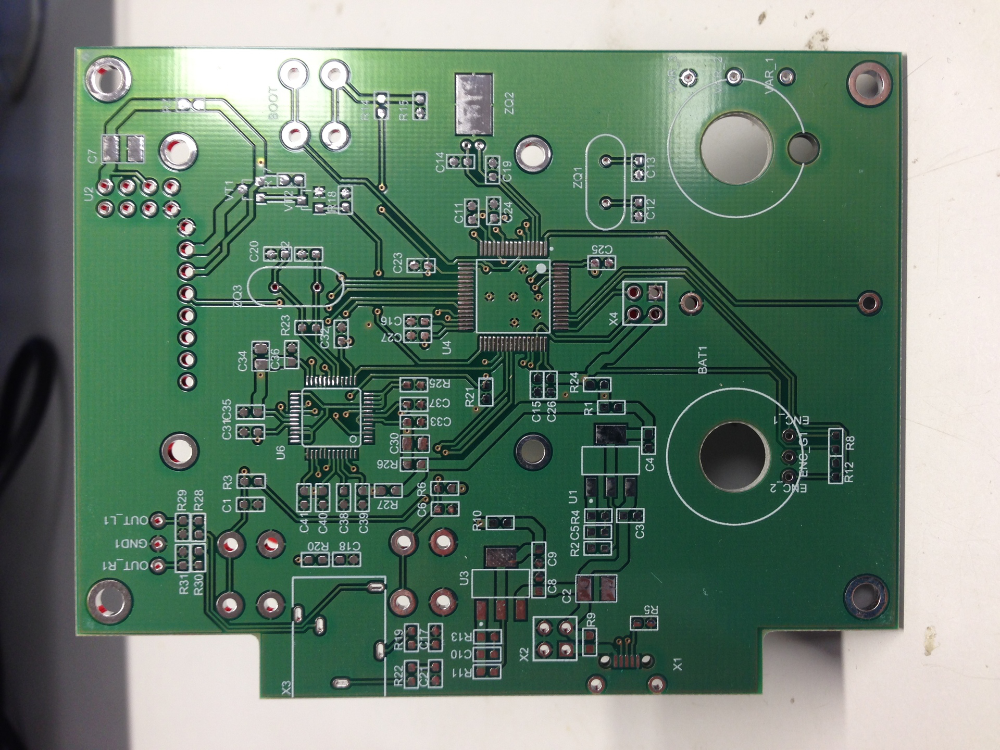
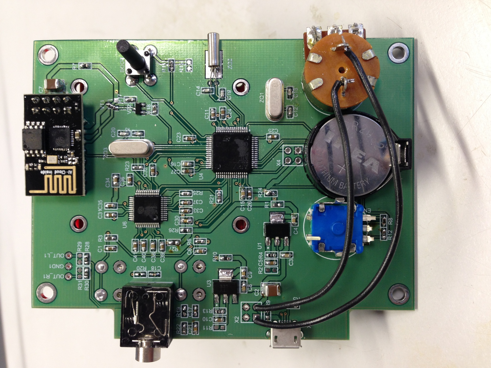
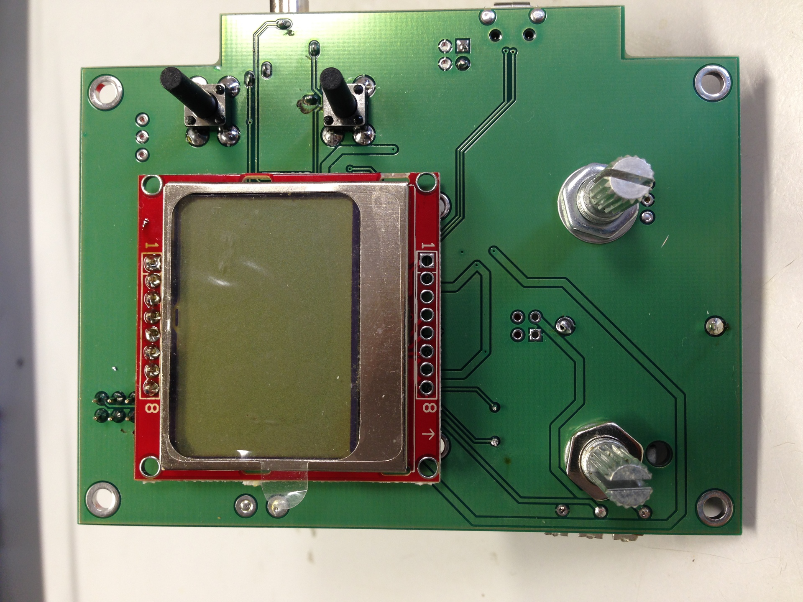
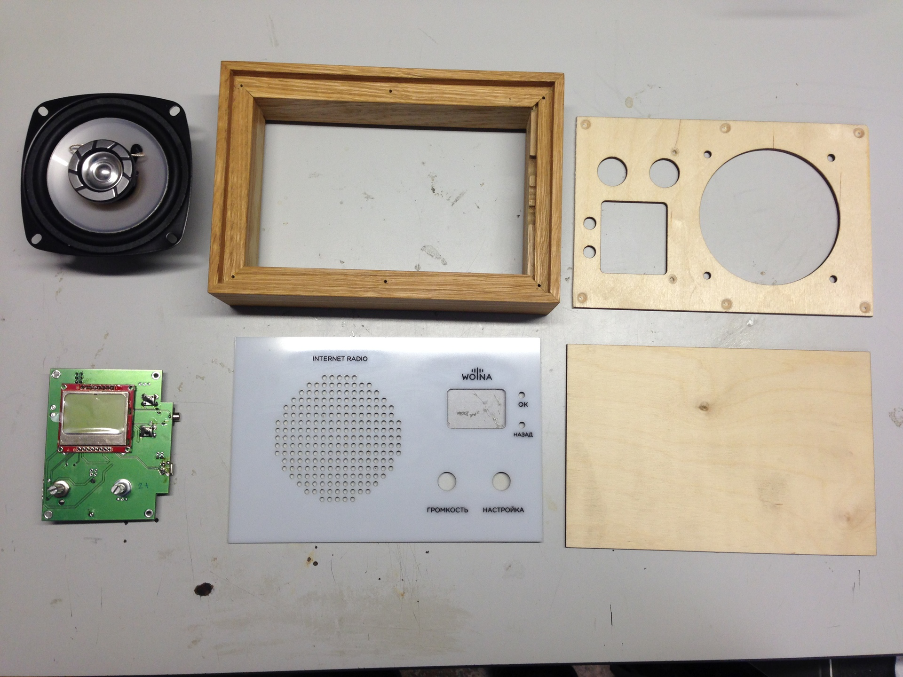
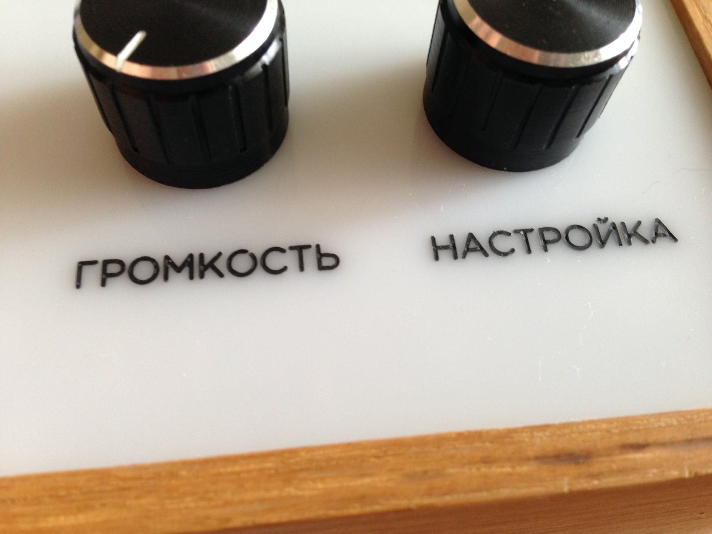
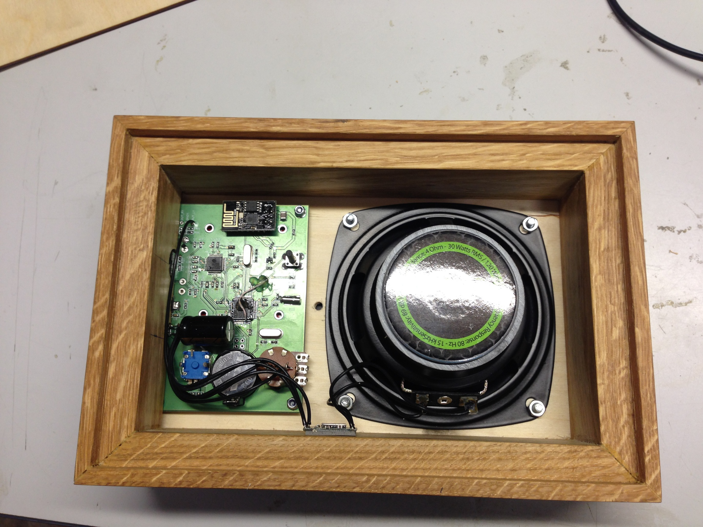
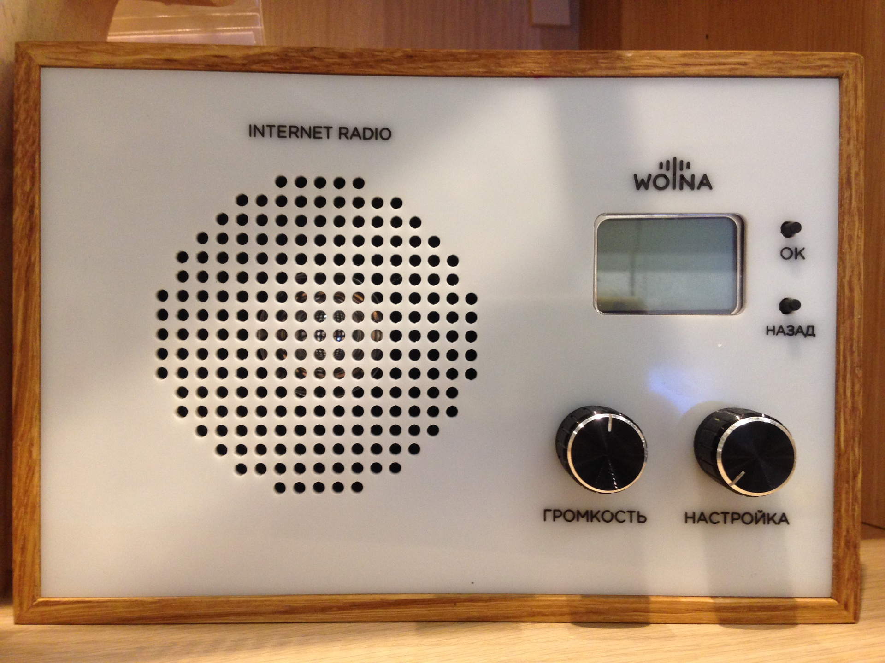

WiFi радиоприемник WOLNA. Как создавался маленький стартап
4 мин53K
Не так давно, я выложил на суд общественности девайс собственной разработки, который разрабатывал последний год. Это интернет радиоприемник, работающий через wifi.

Голосовать за или против людям предлагается рублем на одной из краудфайндинговых площадок. Большого фурора устройство не произвело, хотя спонсоры уже есть. Зато с тех пор поступило много технических вопросов и просьб выложить схемы и прошивку. Всем кого интересует как устройство рождалось, и из чего сделано, добро пожаловать под кат.
Спойлер: прошивки не будет.
Итак, началось все с необходимости иметь дома на кухне радиоприемник. Я как разработчик электроники конечно сразу отмел вариант просто пойти в магазин и купить. Кстати по этой причине у меня до сих пор нет нормального дверного звонка.
ФМ радио отпало по причине скучности реализации. И было решено делать интернет-радио. Забегая вперед, хочу показать, что получился вот такой приемник.
Выбор железа
Сначала предстояло выбрать платформу на которой можно построить интернет-радио. Вариантов множество, но я выбирал из того что было под рукой:
1. Odroid W + LCD
2. STM32F4DISCOVERY + ESP8266 + VS1053B
На одроиде процесс разработки занял бы меньше времени, но минусы, в моем конкретном случае(многие со мной не согласятся), взяли верх:
— процесс загрузки ОС занимает некоторое время
— растущая тенденция к заражению устройств IoT вирусами
— я плохо владею разработкой под Linux
— цена
Тем не менее, я попросил одного моего хорошего товарища написать софтинку для Odroid W, которая запускалась бы при старте системы и проигрывала бы интернет радио. Но невозможность толком править проект не дергая товарища похоронила этот вариант, и подтолкнула меня ко второму.
И я собрал на макетке следующую схему:

Как работать с интернет-радио
После этого, стал смотреть, как работет интернет радио. Оказалось, что подавляющее большинство станций используют для вещания icecast. Он крутится где то на сервере с фиксированным IP, и ждет подключения. Как правило по 8000 или 8080 порту. Хотя есть есть и множество исключений. После подключения, необходимо отправить запрос такого типа, подставив в него имя потока и сервера:
GET /stream HTTP/1.1
Icy-MetaData: 0
User-Agent: Mozilla/5.0 (X11; U; Linux i686; en-US; rv:1.6) Gecko/20040413 Epiphany/1.2.1
Host: internetradioserver.ru
Cache-Control: no-cache
В ответ начинает валится бесконечный mp3 поток, который уже можно декодировать и воспроизводить.
Открытие TCP соединения и прочие радости работы с ESP8266 осуществляются при помощи AT команд. На них останавливаться не буду, инфы полно в интернете. Очень хорошо все расписано в русскоязычном сообществе esp8266. Порядок работы с ним простой:
1. Ожидаем WiFi подключения, если его нет выбираем сеть, вводим пароль.
2. Открываем TCP соединение с сервером радиостанции. Адреса серверов, порты и названия потоков хранятся прямо во флеш памяти микроконтроллера, но об этом позже.
3. Отправляем GET запрос, приведенный выше.
4. Получаем в ответ непрерывный mp3 поток.
5. Если необходимо переключить станцию, закрываем TCP соединение, и повторяем с пункта 2.
Расскажу немного о том, как станции попадают во флеш память микроконтроллера. Изначально на этапе проверки, я просто записывал в одну из страниц памяти программ адреса, номера портов и названия потоков. Но со временем, когда устройства разошлись по родственникам и друзьям пришлось добавить возможность централизованного обновления списка. Решено было создать сервер с фиксированным IP, на котором бы хранился файл со списком станций. При подключении по TCP, сервер ждет пароль, и выдает файл, а микроконтроллер записывает его к себе во флеш память. Так как я впервые столкнулся с созданием «чего-то в интернете», был приятно удивлен, что оказывается аренда виртуальной машины с фиксированным IP стоит всего 100 рублей в месяц. Чудеса :)
Схемотехника
Наигравшись с STM32F4Discovery я решил сделать свою плату, на которой будут расположены все элементы приемника, и не нужно будет тянуть провода ни к дисплею ни к разъемам. Это очень повышает надежность и технологичность и все об этом мечтают.
Схему можно скачать здесь. [СХЕМА]. Я ее не украшал и не причесывал специально для публикации. Это рабочий вариант, и этого должно быть достаточно тем, кто действительно интересуется.
Схема состоит из основных частей:
1. МК STM32F415 с обвязкой-двумя кварцами и батарейкой для часов реального времени.
2. ESP8266
3. VS1053 c обвязкой строго по даташиту. Заведен на МК через SPI.
4. Питание — два линейных регулятора LM1117 на 3.3 и 1.8 вольт.
5. Дисплей, разъемы, кнопки, потенциометр. Все это заведено на GPIO микроконтроллера.
Так же на схеме не отображен усилитель класса D PAM8403 так как он стоит отдельным покупным модулем.
Плата
По хорошему, прежде чем делать плату, необходимо определится с расположением элементов, выступающих из корпуса — кнопок, разъемов, дисплея. Так я и поступил, но о корпусе позже.
Плата получилась вот такая. Осторожно гик-клубничка!



Плата двухслойная, толщина 1.5 мм. Все smd компоненты расположены на одной стороне, что облегчает автоматический монтаж. Однако до него дело пока не дошло.
На пикабу меня уже пожюрили несколько знатоков за небольшие огрехи в разводке. Однако плата работает, и работает как надо. Не вижу ценности в чертежах платы поэтому не выкладываю. Если будут просьбы, выложу. Все равно буду переделывать. Ну и конечно же обоснованная критика очень приветсвуется!
Корпус
Корпус- это боль всех электронщиков-любителей. И даже если ты не любитель, делая корпус за свои деньги ты в него превращаешься.
При небольших партиях самый доступный вариант это либо фрезеровка либо лазерная резка. При вариантах с металлом это еще может быть гибка листового металла, но это не мой случай. Поэтому я выбрал фрезеровку деревянных частей + лазерную резку панелей. С точки зрения звучания, деревянный корпус это еще и огромный плюс.
Получился вот такой комплект деталей:

Отдельного внимания заслуживают надписи. После долгих раздумий, как их наносить, было решено выполнить их методом затирки. То есть сначала тонкой фрезой надпись выбирается на панели, а потом туда заливается краска. После высыхания краски ее излишки удаляются. Весьма дорогостоящая операция, но меня было уже не остановить. К тому же один из самых долговечных способов. Если кто то имеет опыт работы с другими способами нанесения надписей, прошу поделится.
Вот так выглядят получившиеся надписи.

А вот так выглядит собранное радио изнутри:

И еще одно фото снаружи:

Заключение. Эта статья широкими мазками обрисовала подробности разработки устройства. Довольно трудно писать о подробностях, с одной стороны по тому что их море, с другой стороны все они по отдельности кажутся очевидными. Я мог бы написать по отдельной статье, посвященной схемотехнике, печатной плате, прошивке, работе c esp8266 и vs1053b, если наберется достаточный интерес обязательно напишу. Ибо очень хочу, чтобы интернет радио стало популярным.
Теги:
Хабы: